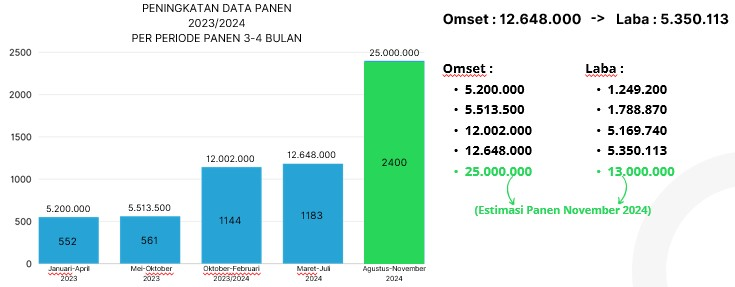
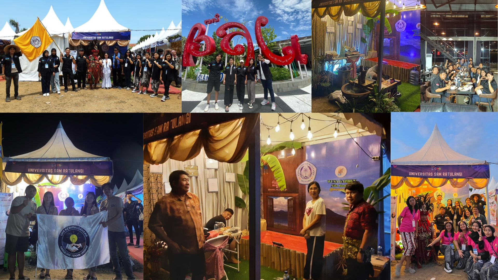
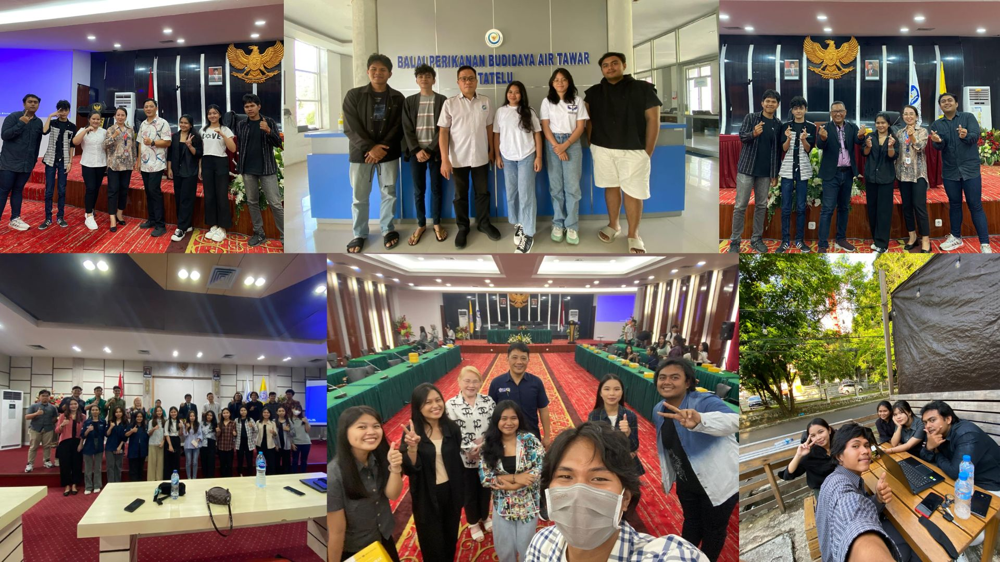
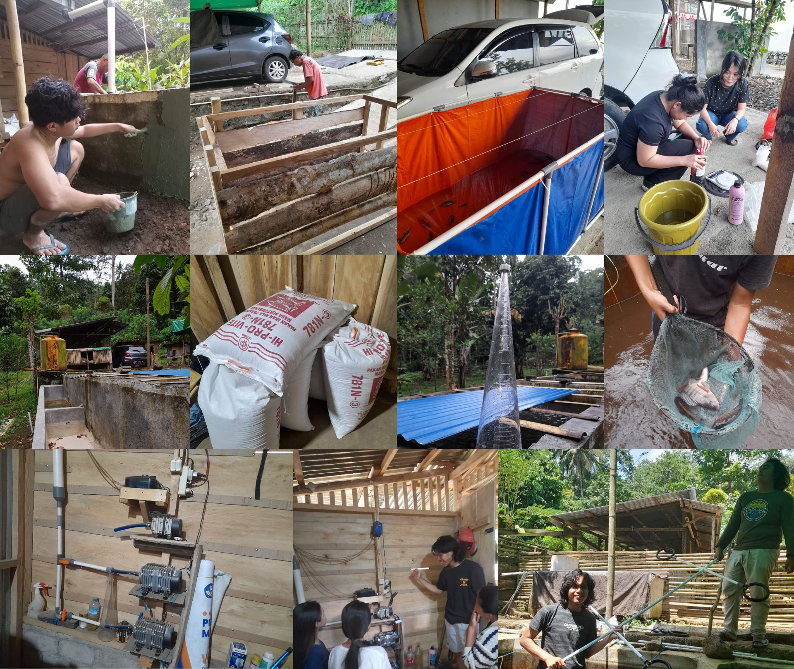
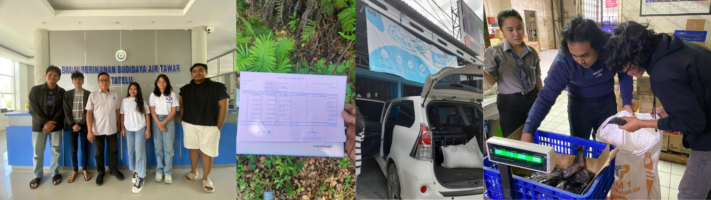
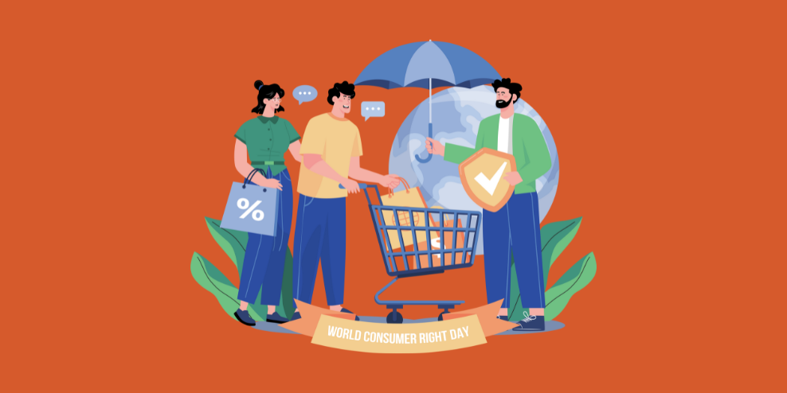
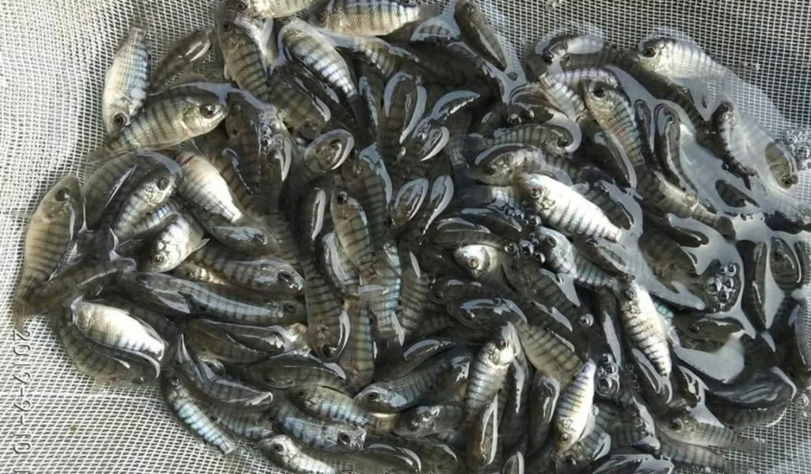

Budidaya ikan nila berperan penting dalam memenuhi kebutuhan
pangan masyarakat. Kami mendirikan usaha ini karena didukung oleh
kondisi sumber daya alam yang optimal, mulai dari ketersediaan
lahan, air, hingga sumber daya manusia yang kompeten.
Budidaya Modern
Wusa Garden berfokus pada akuakultur berkelanjutan menggunakan
sistem bioflok, menghasilkan ikan nila berkualitas tinggi baik
untuk konsumsi lokal maupun produk olahan seperti abon nila.
Tim Berpengalaman
Dikelola dengan tangan-tangan yang berkompeten di bidangnya,
memastikan agar setiap produk yang dihasilkan sudah melewati
proses Quality Control.
ABOUT US
Ingin tahu tentang kami?
Kami berkomitmen terhadap akuakultur berkelanjutan dan praktik
budidaya ikan modern.
Tujuan Mulia
Kami, Wusa Garden Nila Bioflok, hadir sebagai pionir perubahan,
membawa harapan baru dalam dunia budidaya ikan nila yang efisien
dan ramah lingkungan.
Detail Tujuan Mulia
Kami, Wusa Garden Nila Bioflok, hadir sebagai pionir perubahan,
membawa harapan baru dalam dunia budidaya ikan nila yang efisien
dan ramah lingkungan. Tidak hanya sekadar menciptakan hasil
panen yang melimpah, kami berkomitmen untuk menjadi penggerak
transformasi sosial-ekonomi, membuka peluang bagi masyarakat
lokal untuk meraih kemandirian melalui wirausaha berbasis
perikanan.
Deskripsi Usaha
Usaha kami memiliki nama Wusa Garden Nila Bioflok dengan nama
pemilik Theoterra Wongkar. Terletak di Wusa, Desa Kali Selatan,
Kec. Pineleng, Kab. Minahasa.
Deskripsi Usaha
Budidaya ikan nila berperan penting dalam memenuhi kebutuhan
pangan masyarakat. Kami mendirikan usaha ini karena didukung
oleh kondisi sumber daya alam yang optimal, mulai dari
ketersediaan lahan, air, hingga sumber daya manusia yang
kompeten. Dengan potensi besar untuk sukses, kami menerapkan
metode budidaya modern, yaitu sistem bioflok, yang terbukti
efisien dan berkelanjutan.
Usaha kami memiliki nama Wusa Garden Nila Bioflok dengan nama
pemilik Theoterra Wongkar. Usaha kami ini masuk dalam bidang
budidaya yang sudah kami jalankan sejak Januari 2023. Jenis
produk yang kami jual adalah Ikan Nila Lokal (Nila Hitam) dan
Nila Citralada (Nila Merah) dan hasil olahan berupa Abon Nila
yang akan kami distribusikan setelah Izin Edar dan Sertifikasi
Halal terbit. Lokasi budidaya kami terletak di Wusa, Desa Kali
Selatan, Kec. Pineleng, Kab. Minahasa. Cabang baru kami terletak
di Malalayang 1 Barat, Kec. Malalayang, Kota Manado.
Sebagai bagian dari komitmen kami terhadap kualitas dan inovasi,
kami mengolah hasil panen menjadi abon ikan nila yang kaya gizi
dan memiliki cita rasa khas. Produk ini tidak hanya meningkatkan
nilai ekonomi dari budidaya, tetapi juga membuka pasar baru yang
lebih luas. Selain itu, limbah dari sistem bioflok kami
manfaatkan sebagai pupuk alami untuk pertanian, menciptakan
sebuah ekosistem yang terintegrasi dan berkelanjutan.
Sertifikasi dan Pencapaian
Dari perjalanan kami yang panjang ini, kami telah mengantongi
beberapa legalitas dan sertifikasi. Kami juga memiliki beberapa
pencapaian
Sertifikasi & Pencapaian
Kami memiliki beberapa Legalitas seperti NIB, Sertifikat
Standar, Surat Pernyataan Kesanggupan Pengelolaan Dan Pemantauan
Lingkungan Hidup (SPPL), dan persetujuan PKPLH yang tentunya
usaha kami jadi terdaftar di negara. Serta Sertifikat ISEC, KMI
dan Kewirausahaan Dasar dari Kominfo.
Wusa Garden telah berhasil mencapai pencapaian signifikan dalam
budidaya ikan nila dengan metode bioflok yang efisien dan ramah
lingkungan. Melalui inovasi ini, kami tidak hanya meningkatkan
kualitas dan produktivitas hasil panen, tetapi juga mendukung
ketahanan pangan lokal. Wusa Garden terus memperluas jangkauan
pasar dan menjadi pelopor dalam industri perikanan berkelanjutan
di wilayah kami. Kami juga mendapat pencapaian yaitu di izinkan
mengikuti KMI Expo yang dipercayakan oleh Kemdikbudristek dan
Unsrat di Bali.

Dari Maret hingga Juli, kami menuai hasil dari 1.183 ekor ikan,
terjual dengan harga Rp. 34.000 per kilogram. Total pendapatan
yang kami kumpulkan bagaikan hasil panen yang berlimpah,
mencapai Rp. 12.648.000.
Galeri Wusa
Lihatlah perjalanan kami dalam budidaya ikan nila yang modern dan
berkelanjutan, dari proses pemeliharaan hingga hasil panen yang
berkualitas.
Galeri Wusa
Galeri Wusa Garden menampilkan keindahan budidaya ikan nila
dengan sistem bioflok, mencerminkan dedikasi kami terhadap
keberlanjutan dan inovasi.
1. Road To KMI Expo 2023 - Singaraja, Bali

Kami mengucapkan terima kasih kepada Kementerian Pendidikan
dan Kebudayaan Republik Indonesia, Universitas Sam Ratulangi,
Tim Wusa Garden dan semua pihak yang ikut andil dalam
perjalanan Wusa Garden. KMI Expo adalah ajang pertemuan
mahasiswa wirausaha dari seluruh Indonesia untuk berkompetisi,
bertukar ide, dan mempromosikan produk.
2. Pelatihan dan Bimbingan Teknis

Pelatihan yang dilaksanakan di Universitas Sam Ratulangi,
Mercure Hotel, BPBAT Tatelu. Pelatihan guna menambah wawasan
kami dalam proses bisnis dan budidaya.
3. Aktifitas Budidaya

Wusa Garden mengelola budidaya ikan nila dengan sistem
bioflok dan mengolah hasil panennya menjadi abon ikan nila,
berfokus pada efisiensi produksi dan kelestarian lingkungan.
Berikut adalah aktifitas kami :
- Melakukan instalasi kolam dan pemipaan
- Memproduksi ikan nila
- Management kualitas air
- Management kualitas ikan
- Melakukan penyortiran ikan
- Membangun rumah produksi baru
Mitra dan Pelanggan
Kami berkolaborasi dengan mitra terpercaya untuk memastikan
kualitas terbaik dalam setiap aspek budidaya ikan nila.
Mitra dan Pelanggan
Wusa Garden bermitra dengan institusi dan penyedia terkemuka
untuk menyediakan produk ikan nila berkualitas tinggi,
berkomitmen pada praktik berkelanjutan dan kepuasan pelanggan.
1. Mitra Kami

Kami mengucapkan terima kasih yang sebesar-besarnya kepada
mitra kami yang terhormat. Kerjasama dan dukungan Anda sangat
berharga dalam perjalanan Wusa Garden untuk mencapai
keberhasilan bersama.
2. Pelanggan Kami
Kami ingin mengucapkan terima kasih yang tulus kepada
pelanggan setia Wusa Garden. Dukungan Anda membuat setiap
usaha kami berarti. Terima kasih telah menjadi bagian dari
perjalanan kami!
OUR SERVICES
Kami siap sedia melayani anda!
Kami berkomitmen terhadap pelayanan guna meningkatkan hubungan kami
dengan pelanggan.
↦ Bimbingan Teknis
Untuk meningkatkan pengetahuan dan keterampilan dalam mengelola
budidaya secara efisien, memanfaatkan teknologi modern untuk
memperbaiki kualitas dan kuantitas hasil panen, serta mendukung
praktik budidaya yang berkelanjutan.
↦ Pendampingan
Pendampingan praktis dan dukungan kepada pembudidaya, memastikan
mereka dapat menerapkan teknik-teknik terbaik dalam pengelolaan
sistem bioflok, serta membantu mengatasi tantangan yang dihadapi
agar dapat mencapai hasil panen yang maksimal dan berkelanjutan.
↦ Kunjungan
Kunjungan ke Wusa Garden Nila Bioflok memberikan kesempatan bagi
para pengunjung untuk melihat secara langsung penerapan teknologi
bioflok dalam budidaya ikan nila, serta memahami proses
pengelolaan yang efisien dan ramah lingkungan yang dilakukan untuk
meningkatkan hasil panen dan kualitas produk perikanan.

↦ Informasi Produk
Produk Wusa Garden Nila Bioflok dihasilkan melalui metode budidaya
modern yang ramah lingkungan, memastikan ikan nila berkualitas
tinggi dengan tekstur daging yang lembut dan rasa yang lezat.
Produk ini diolah dengan standar terbaik untuk menjaga kesegaran
dan gizi.
↦ Cara Pemesanan
Untuk melakukan pemesanan, anda dapat menghubungi kami melalui
nomor telepon atau WhatsApp yang tersedia, atau kunjungi website
resmi kami untuk informasi lebih lanjut. Kami melayani pemesanan
dalam jumlah besar maupun kecil, dengan sistem pengiriman yang
cepat dan aman untuk memastikan produk sampai dalam kondisi segar.
↦ Pengaduan
Jika Anda memiliki keluhan atau pengaduan terkait produk Wusa
Garden Nila Bioflok, kami siap membantu. Silakan sampaikan
pengaduan Anda melalui layanan pelanggan kami via telepon, email,
atau WhatsApp, dan tim kami akan segera menindaklanjuti untuk
memberikan solusi terbaik demi kepuasan Anda.
Our Product
Nikmati produk terbaik dari kami!
Kami berkomitmen untuk memberikan pengalaman terbaik hingga ditangan
pelanggan.

Ikan Nila Hitam/Merah
Bibit
Bibit ikan nila berkualitas yang sudah melewati quality control